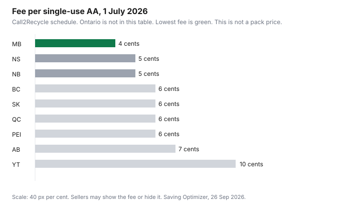

Household Items and Supplies · Canada
Rechargeable vs Disposable Batteries in Canada: Cost per Use and Where to Recycle
A drawer of half-used AA batteries is a price you never divided. Rechargeable nickel-metal hydride cells can win, and they can also sit in a charger that cost more than the alkalines you would have bought. This page prints the fee schedule that did load, the recycling network, and the arithmetic. It does not print a Costco, Canadian Tire, or Dollarama pack price, because those shelf tags did not load on 26 Sep 2026. A break-even chart without a pack price would be a fiction.
Bulk buys that did have a unit price are on the Costco household aisle and the banner comparison. Batteries were a gap on that banner page for the same reason: no Dollarama tag had been opened.
Disclosure: Rechargeable cells and chargers sold through Amazon.ca storefronts are an offer type. Saving Optimizer may earn a commission if we later add a partner link. We do not currently claim an Amazon partnership. A storefront link does not change the cost-per-use division. Education only.
Key takeaways
- Cost per alkaline use is pack price divided by count. Cost per rechargeable use needs the charger, the cell price, and the cycle count on that cell's spec. None of those shelf prices loaded.
- Call2Recycle's schedule effective 1 Jul 2026, Ontario excluded from the published table: a single-use AA fee runs from 4 cents in Manitoba to 10 cents in Yukon. A rechargeable AA is higher, 7 cents in Manitoba and Quebec up to 20 cents in Yukon.
- The fee is paid by the obligated party. The seller chooses whether you see it. Drop-off at a Recycle Your Batteries location is the free step. The program cites more than 15,000 sites.
- Health Canada says follow the smoke-alarm maker on battery changes, test monthly, and replace an alarm older than ten years. Look for a Canadian certification mark on the alarm itself.
- Lithium-ion storage on Health Canada's page: about 50 percent charge if unused, checked every three months, original charger only. Terminal-taping was not on the page opened.
Cost per use: disposable alkaline vs NiMH rechargeable (CAD table from Costco, Canadian Tire, Dollarama prices)
The heading asks for those three banners. The pages that would have carried a live AA price did not return one on 26 Sep 2026. Third-party price trackers were not used. The table therefore has the fee, which is real, and blank pack columns you fill in the store. Alkaline cents per battery equal the shelf price divided by the count in the pack. If a 48-pack is the one in your hand, divide by 48, not by a "value size" claim. Rechargeable cents per use equal the charger price plus the cell-pack price, divided by the number of cells times the recharge cycles the manufacturer prints for that model, then add the electricity, which is small next to the cells. If the package does not print cycles, do not borrow a number from a different brand.
| Province or territory | Single-use AA fee | Rechargeable AA fee |
|---|---|---|
| Manitoba | $0.04 | $0.07 |
| Nova Scotia | $0.05 | $0.10 |
| New Brunswick | $0.05 | $0.10 |
| British Columbia | $0.06 | $0.15 |
| Saskatchewan | $0.06 | $0.09 |
| Quebec | $0.06 | $0.07 |
| Prince Edward Island | $0.06 | $0.11 |
| Alberta | $0.07 | $0.16 |
| Yukon | $0.10 | $0.20 |
| Ontario | Not in this published table | Not in this published table |
Call2Recycle's July 2026 FAQ says the published schedule covers British Columbia, Alberta, Saskatchewan, Manitoba, Quebec, New Brunswick, Prince Edward Island, Nova Scotia, and Yukon, and that Ontario questions go to customer service. The fee applies to stand-alone batteries in the program, including alkaline and nickel-metal hydride. The obligated party remits it. Whether it appears on your receipt is the seller's choice, and it can be hidden in the price. A 6-cent fee does not decide alkaline versus rechargeable. A $15 charger does. Write the charger into the first use, not into a fantasy of infinite cycles.

Devices where rechargeables pay off fast: game controllers, toys, remotes that drain, flashlights
Payoff speed is how many alkaline swaps you avoid. A controller that eats a pair of AA cells every weekend gives the rechargeable cells something to do. A toy bin that is opened daily is the same. A flashlight used on walks is the same. A television remote that still works after a year is a slow swap, and the charger may never earn its price on that remote alone. Count the swaps you remember, or keep the dead alkalines for a month and count them. That count, times the cents per alkaline you wrote down in the store, is the annual disposable bill for that device. Compare it with the charger plus cells divided by the printed cycles. If the cycles are 500 and you only need 20 a year, you will not "use up" the spec. You may still be ahead if 20 alkalines cost more than the kit. You will not be ahead if you bought four chargers.
Where disposables still win: smoke alarms, clocks, emergency kits
Health Canada's fire-safety page says to install alarms in each bedroom, in the hallway outside bedrooms, and on each level, to follow the manufacturer's directions, to test every month, to change batteries as often as the manufacturer recommends, and to replace any alarm more than ten years old. A separate Health Canada recall notice says smoke and carbon monoxide alarms need a Canadian certification mark on the product, such as CSA, cUL, ULC, or cETL, not only on the box. None of those pages, as opened, named alkaline versus lithium versus NiMH as a national rule. The alarm's manual is the rule. If it specifies a sealed lithium cell or a particular alkaline, do not "upgrade" it to a rechargeable the manual does not list. A clock on a wall and a kit you hope not to open in a blackout are poor homes for a cell that slowly self-discharges or that you meant to top up. Leave disposables there, and put the rechargeables in the devices you already open.
Buying batteries in Canada: bulk packs, flyer lows, and counterfeit risk from marketplace sellers
Bulk is only a saving after the division. A warehouse pack that is cheap per cell and that you will use before it leaks is a reasonable buy. A dollar-store blister that costs more per cell than the warehouse pack is not cheap. Because the three banner prices did not load, this section stops at the method: photograph the tag, divide by count, and keep the receipt. Flyer prices expire. The banner guide is where unit price already beat a store's reputation on items that did have tags.
Marketplace listings are a different risk from a high price. A cell with no traceable brand, sold by a seller you cannot return to, is not a deal this guide can price. Health Canada's alarm notice is about certification marks on safety devices bought online. Apply the same caution to a charger: if it plugs into the wall, look for a Canadian certification mark, which Health Canada's lithium-ion page requires of chargers. A no-name charger that arrives warm is not a saving.
Free recycling through Call2Recycle drop-offs and provincial battery fees
Call2Recycle says residents find drop-off sites through Recycle Your Batteries, Canada, and that the program has more than 15,000 locations: retailers, depots, libraries, and household hazardous waste sites. Transportation from collection partners is covered by the program. You do not pay a gate fee at those boxes for the household batteries the program accepts. The environmental handling fee is upstream. One line, dated: on the 1 Jul 2026 schedule opened for this guide, a single-use AA is 4 to 10 cents depending on the province in the table above, and Ontario's cents are not published in that file. Rechargeable AA fees in the same file are higher. Confirm the line on your receipt if you want to know whether your seller shows it.
Storage and safety: taping lithium terminals, household hazardous waste days
Health Canada's lithium-ion page, opened 26 Sep 2026, tells you to charge with the original charger or a compatible replacement from a trusted source, not to charge longer than the instructions, not to use damaged batteries, and to store batteries that will sit unused at about a 50 percent charge in a cool, dry place, checking every three months and topping back to about 50 percent if they have drained. It says incidents with larger batteries are harder to extinguish, and to contact the manufacturer for a replacement rather than a random pack. The page did not instruct readers to tape terminals. If a carrier or a municipal site asks for tape, follow that site. Do not add a step the safety page did not print and then treat it as Health Canada's rule.
Do not throw lithium batteries in the garbage or the recycling cart. Use the Call2Recycle locator, or the household hazardous waste program your city runs. Calgary's residential waste-rates page says the household hazardous waste program is among the services still supported by property tax, separate from the cart fees. It does not list drop-off days. Toronto's garbage-fee page says the solid-waste fees fund Community Environment Days, again without printing a calendar here. Look up the date on the city site before you drive. A swollen battery in a drawer is the item to move first.
Sources & date stamps
- Call2Recycle environmental handling fee product guide, effective 1 Jul 2026, Ontario excluded from the grid, opened 26 Sep 2026: single-use AA and rechargeable AA fees by province as in the table. July 2026 FAQ: schedule coverage, Ontario via customer service, seller decides if the fee is visible.
- Call2Recycle household-battery overview and Recycle Your Batteries drop-off pages, opened 26 Sep 2026: more than 15,000 locations; collection funded for resident drop-off.
- Health Canada fire safety in your home, and the certification-mark notice for smoke and carbon monoxide alarms, opened 26 Sep 2026: manufacturer battery directions, monthly test, replace alarms older than ten years, marks such as CSA, cUL, ULC, cETL on the product.
- Health Canada lithium-ion battery safety page, opened 26 Sep 2026: original charger, storage near 50 percent, check every three months. Terminal taping was not on that page.
- City of Calgary waste rates page, opened 26 Sep 2026: household hazardous waste program named as tax-supported. No event dates on that page.
Frequently asked questions
Are rechargeable batteries cheaper in the long run?
They are cheaper only after you divide. Alkaline cost per use is the pack price divided by the number of batteries. Rechargeable cost per use is the charger plus the cells, divided by cells times the cycle count printed on that cell, plus a small electricity cost. Costco, Canadian Tire, and Dollarama shelf prices for AA packs did not load on 26 Sep 2026, and no manufacturer cycle count was opened, so this guide does not print a winner. The environmental handling fee is extra and is not the pack price.
Which devices should use rechargeables?
Devices you open often: game controllers, toys, remotes that die in weeks, and flashlights you actually use. Those are the swaps where a cycle count has a chance to pay the charger back. A remote that lasts a year on one alkaline pair may never reach the break-even, even if the cells are good. Write down how often you replace the batteries in that device before you buy a charger.
Where should I still use disposables?
Where the device manual names a battery and does not mention a rechargeable. Health Canada's fire-safety page says to change smoke-alarm batteries as often as the manufacturer recommends, to test monthly, and to replace an alarm older than ten years. This draft did not open a smoke-alarm manual that required alkaline or lithium, so it does not ban NiMH in every alarm. It says follow that manual. Clocks and an emergency kit you will not recharge in a power cut are the same idea: a cell you can leave in the drawer.
Where can I recycle batteries for free?
Call2Recycle's consumer program, Recycle Your Batteries, Canada, says there are more than 15,000 drop-off locations, including retailers and municipal depots, and that collection is funded so residents can drop household batteries off. The locator is on recycleyourbatteries.ca. The environmental handling fee is paid by the obligated producer. Call2Recycle says the seller decides whether you see it on the receipt. Drop-off itself is the free step.
How do I store and dispose of lithium batteries safely?
Health Canada's lithium-ion page says to use the charger that came with the device, not to charge longer than recommended, and to store batteries you will not use at about a 50 percent charge in a dry place, checking every three months. The page opened here did not say to tape the terminals. Do not put damaged or swollen batteries in the household garbage. Take them to a Call2Recycle drop-off or the household hazardous waste program your city lists. Calgary's waste-rates page says that program exists and is tax-supported. It does not print event dates.